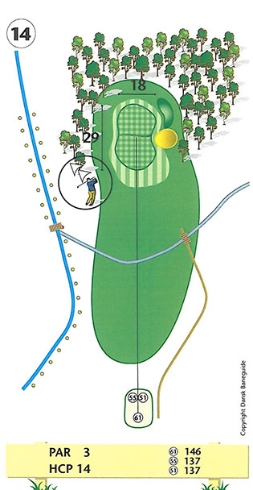
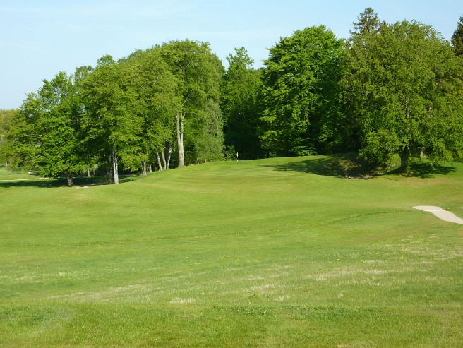

<div class="pages">
  <div data-page="hul14" class="page navbar-fixed toolbar-fixed" >
    <div class="navbar">
      <div class="navbar-inner">
        <div class="left">
          <a href="#" class="link back icon-only"><i class="icon icon-back"></i></a>
          <!-- <a href="#" class="back link icon-only"><i class="icon icon-back"></i></a> -->
        </div>
        <div class="center">Hul 14</div>
        <!-- <div class="right"></div> -->
        <div class="right">
        </div>
      </div>
    </div>
    <div class="page-content" style="padding-top:45px;">
       <div class="content-block">
          <center></center>
          <p>Præcision udbedes! 14. hul er et utroligt smukt par 3 hul, hvor farerne lurer overalt.</p>
          <center></center>
          <p>Udslag til venstre, havner i skoven. Slår du til højre, vil du finde din bold i en dyb bunker. Slår du for langt ender du i rough eller skov. Så hvis du vil spille sikkert, er det en god ide at spille kort af green, men pas på den lille bæk!</p>
          <p>Green er beliggende lavere end tee-stedet og er anlagt i to niveauer, så vær opmærksom på hvor pinden er placeret, inden du slår.</p>
          <p>For lav-handicapperen er valget af jern af afgørende betydning. Vær opmærksom på, at du muligvis står i læ på tee-stedet. Green skråner kraftigt fra bagkant til forkant og vil tage godt mod dit høje udslag.</p>
          <p>Hulsponsor: <br />
          <br /><br />
          Bænksponsor:<br />
          
          </p>
        </div>
    </div>
    </div>
    </div>
  </div>
</div>
